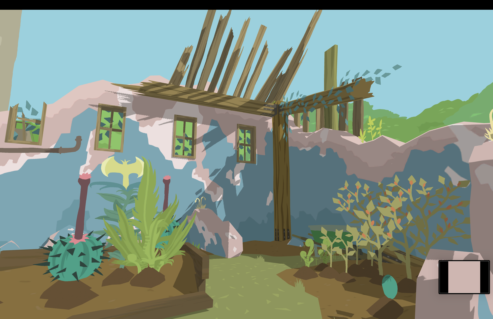
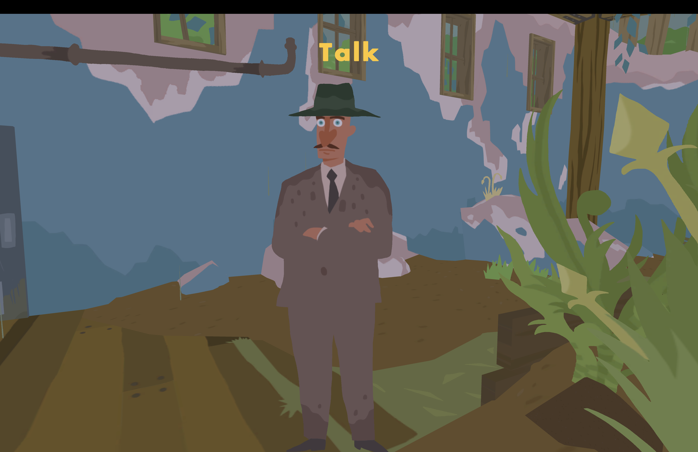
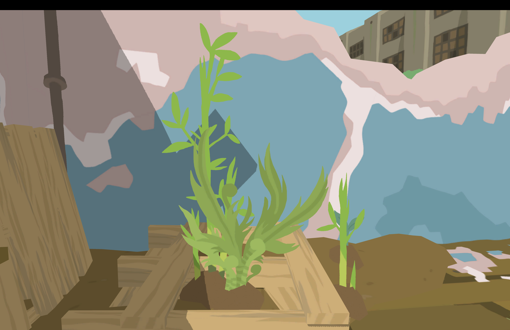

Game World
The game world feels small but very intentional. It is colorful, but also kind of depressing and repetitive. The environment looks abandoned, with broken buildings and plants growing through everything. Even though the graphics are simple, they still create a strong atmosphere.
Setting and Exploration
Most of the game takes place between my quarters and the garden. You can’t explore very far, which makes the game feel a little limiting. However, the repetition of moving between these spaces makes it feel like the character is stuck.
Character
You play as a gardener. There is only one character, and you learn about them through what they do rather than through dialogue. The gameplay makes it feel like they are trapped in their role.
NPC Interactions
The main NPC is a supervisor who visits and talks to you. He is very direct and formal, and he evaluates your work. These interactions feel more like being controlled than having a real conversation. Although he does deveolop a liking to you. He becomes almost proud of you.
Objects and Gameplay
You interact with seeds, a seed box, a watering can, and garden beds. Packages arrive with a few seeds each day. The gameplay is focused on planting and maintaining crops using these objects. It is extremely simple
Challenges
The game includes challenges like running out of water and birds eating your seeds. There is also pressure from the supervisor to meet expectations, which adds another layer of difficulty.
Sound and Music
The music changes depending on what is happening. On rainy days, it becomes more ominous and sounds like war music, which makes the game feel more serious.
Meaning and Themes
The game seems to comment on labor and control. Even though you are gardening, your work is connected to a larger system. When you are given a medal and a weapon, it suggests that your work is contributing to something bigger, possibly war.
Future Improvements
The game could be expanded by allowing more exploration or giving the player more choices. It could also develop the story further to make its message clearer.
Screenshots


